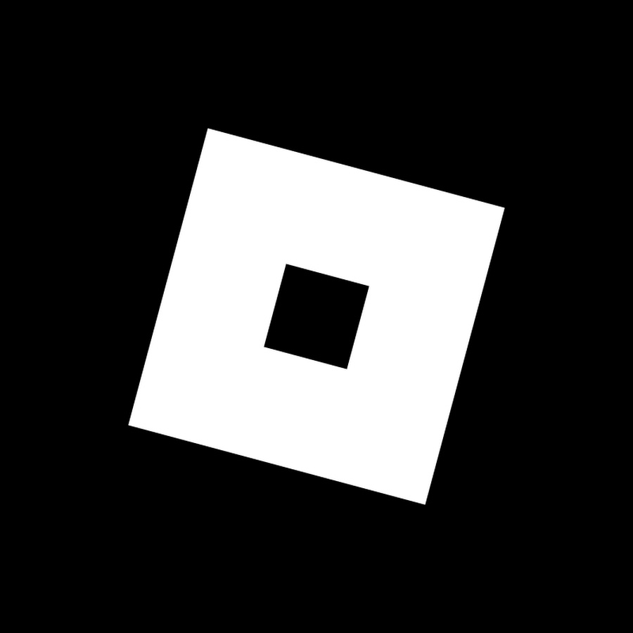
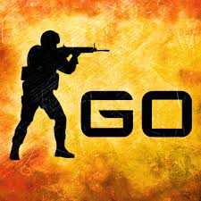
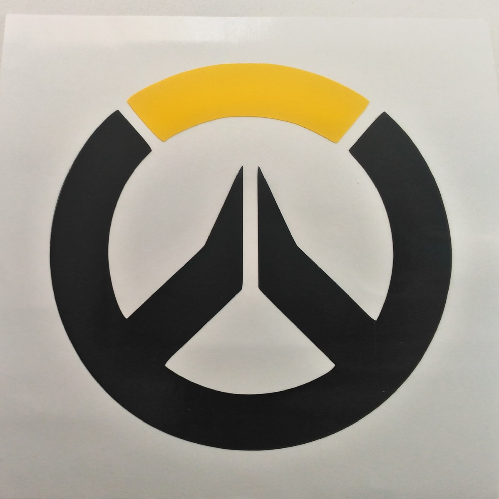

- Olá, eu sou o...
- Confuzion
- Wesley da Costa Souza
Redes Sociais

Discord
@gallarxyunn — Confuzion
Aqui eu passo boa parte do tempo falando com meus amigos e indo em calls, ou conferindo atualizações em jogos que eu jogo!

@wesley.szzz — Wesley Costa
No Instagram eu vejo alguns reels por aqui e ali, e posto algumas fotos do dia-a-dia!

Spotify
confuzion
Ouço muitas músicas diferentes, como breakcore, lo-fi e algumas OSTs de vários jogos que eu gosto! (E sim, minha playlist é bem bagunçada)

Steam
confuziongx — confuzion
Aqui eu fico de olho em algumas promoções de jogos e jogo alguns com meus amigos (contarei mais na parte de jogos)
Jogos mais jogados
-
Jogando desde: 2018
-
Horas jogadas: 2000h+
- Comecei a jogar sozinho, depois fui encontrando cada vez mais pessoas que jogam, me interessando cada vez mais na plataforma. Hoje em dia não compensa jogar mais, pelo número de jogos desleixados para "roubar o seu dinheiro".
-
Jogando desde: 2019
-
Horas jogadas: 545,6h
- Um dos jogos que eu mais joguei, passei boa parte da minha infância nisso e não me arrependo.
-
Jogando desde: 2023
-
Horas jogadas: 250h+
- Também jogava muito com amigos, jogo muito bem trabalhado com cada herói sendo único, habilidades roubadíssimas e mapas bem feitos.
-
Jogando desde: 2023
-
Horas jogadas: 300h+
- Achei os trailers muito bem feitos, e decidi começar a jogar. Achei o jogo muito dinâmico, quase sendo um equilíbrio entre Overwatch e CSGO.
Roblox
Counter-Strike: Global Offensive
Overwatch 2
Valorant


